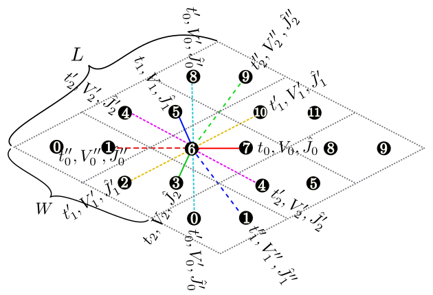
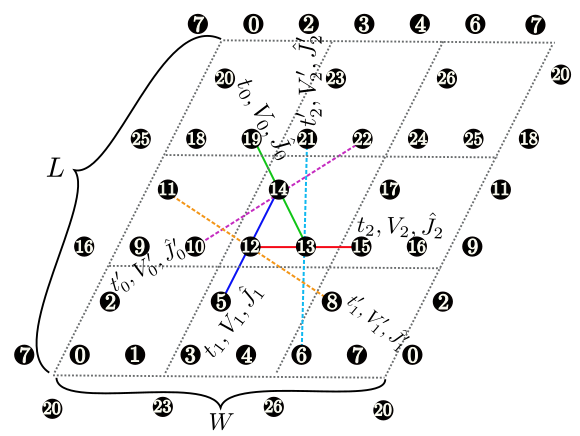

4.1.2. Parameters for the lattice¶
Chain [ Fig. 4.1 (a)]¶
LType : Integer
Description : The length of the chain is specified with this parameter.

Fig. 4.1 Figure 1: Schematic illustration of (a) one-dimensional chain lattice, (b) two-dimensional square lattice, and (c) two-dimensional triangular lattice. They have \(t\), \(V\), and \(J\) as the nearest neighbor hopping, an offsite Coulomb integral, and a spin-coupling constant, respectively (magenta solid lines); they also have \(t'\), \(V'\), and \(J'\) as the next nearest neighbor hopping, offsite Coulomb integral, and spin-coupling constant, respectively (green dashed line).
Fig. 4.2 Figure 2: Schematic illustration of the anisotropic honeycomb lattice. The first/second/third nearest neighbor hopping integral, spin coupling, and offsite Coulomb integral depend on the bond direction.
Fig. 4.3 Figure 3: Schematic illustration of the Kagome lattice.

Fig. 4.4 Figure 4: Schematic illustration of the ladder lattice.
Ladder ( Fig. 4.4 )¶
LType : Integer
Description : The length of the ladder is specified with this parameter.
WType : Integer
Description : The number of the ladder is specified with this parameter.

Fig. 4.5 Figure 5: Shape of the numerical cell when \({\boldsymbol a}_0 = (6, 2), {\boldsymbol a}_1 = (2, 4)\) in the triangular lattice. The region surrounded by \({\boldsymbol a}_0\) (magenta dashed arrow) and \({\boldsymbol a}_1\) (green dashed arrow) becomes the cell to be calculated (20 sites).
Tetragonal lattice [ Fig. 4.1 (b)], triangular lattice [ Fig. 4.1 (c)], honeycomb lattice [ Fig. 4.2 ], Kagome lattice [ Fig. 4.3 ]
In these lattices, we can specify the shape of the numerical cell by using the following two methods.
W,L
a0W,a0L,a1W,a1LType : Integer
Description : We can specify two vectors (\({\boldsymbol a}_0, {\boldsymbol a}_1\)) that surround the numerical cell (Fig. 4.5 ). These vectors should be specified in the fractional coordinate.
If we use both these methods, HPhi++ stops. When
model=SpinGCCMA, we can use only the former.
We can check the shape of the numerical cell by using a file
lattice.gp which is written in Standard mode. This file can be read
by gnuplot as follows:
$ gnuplot lattice.gp